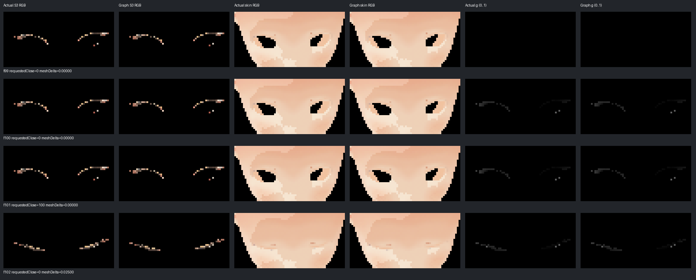

제품77 유지. 정상 Play 1회, ROI 4프레임/136planes. 실제 S3와 Graph normal·SH·주광/합산·g 차이0. RGB 평균이나 임의 SH 보정 없음.
최종 눈 합성·미관·보행 안정성 미검증. backing은 아래 1코드 반례가 남아 미채택. 요청 Close getter는 평가 메쉬 상태가 아니며 마지막 프레임은 실제 재개방 검증이 아니다.
아래는 4x source RT RGB/독립 g 가시화의 nearest ×5 비교이다. 캐릭터 최종 원배율 렌더가 아니다. 검정은 clear/빈 표본이며 새 최종 팔레트가 아니다.

| frame | 요청 getter | 평가 mesh Δ | backing RGBA max | sRGB8 다른 표본 | 최대 code Δ |
|---|---|---|---|---|---|
| 99 | 0 | 0.0 | 5.078315734863281e-05 | 0 | 0 |
| 100 | 0 | 1.1920928955078125e-07 | 5.078315734863281e-05 | 0 | 0 |
| 101 | 100 | 0.0 | 5.078315734863281e-05 | 0 | 0 |
| 102 | 0 | 0.024997830390930176 | 0.0004570484161376953 | 1 | 1 |
실측 좌표·원래/후보 RGBA · 복원·메모리·오류 확인 · 실행 한계 · Graph 함수 · 동결 자료 검사